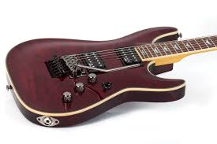
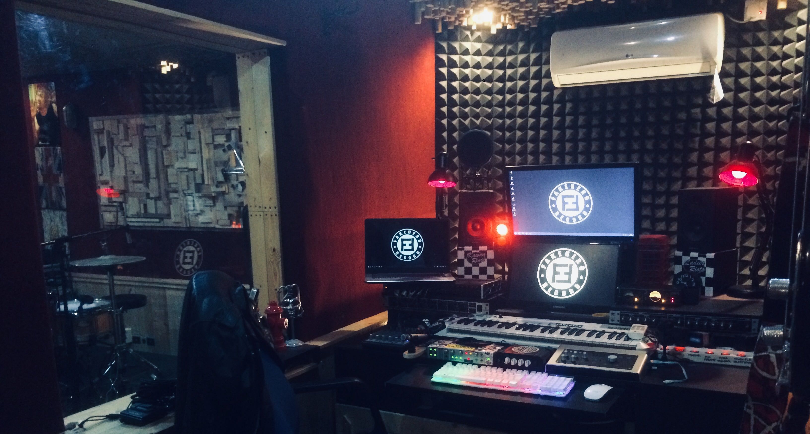
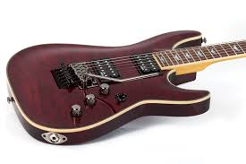
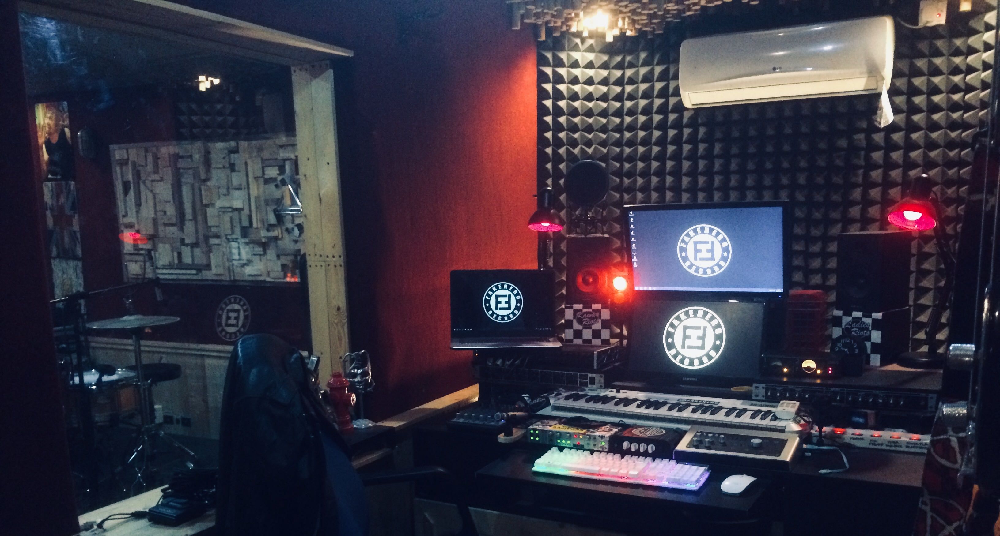

Saya sebenarnya tidak memiliki cita-cita, atau saya mungkin belum
menemukannya, tetapi saya memiliki impian yaitu saya ingin memiliki banyak
koleksi gitar mahal dan juga studio recording super mewah, melihat konser
band favorit saya, dan juga saya ingin berkeliling dunia dengan keluarga
saya, dan hal yang bisa saya lakukan untuk meraih impian saya adalah, saya
harus berusaha menjadi orang sukses amin!